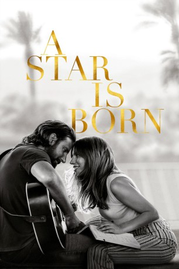
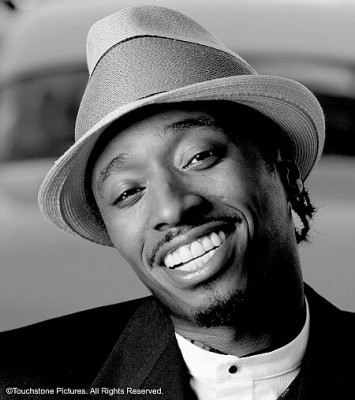
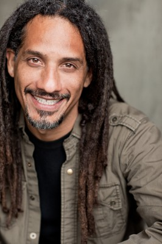

#10002 A Star Is Born
Auszeichnungen: 1 GoldenGlobes gewonnen
 gesehen am 19.01.2019
gesehen am 19.01.2019
 
 IMDB-Wertung: 8.1 / 10
IMDB-Wertung: 8.1 / 10  Metascore: 88
Metascore: 88 
Jackson MainesCountry-Karriere befindet sich am Tiefpunkt, als er eine begabte Unbekannte namens Ally entdeckt. Die beiden beginnen eine leidenschaftliche Liebesbeziehung, und Jack drängt Ally ins Rampenlicht, wo sie über Nacht zum Star aufsteigt. Als Allys Karriere Jack bald in den Schatten stellt, fällt es ihm zunehmend schwerer, sich mit seinem verblassenden Ruhm abzufinden.
Jahr: 2018
Dauer: 136 Minuten
FSK: 12
Land: USA Studio: Warner Bros.Tonspuren: DD5.1 - ,
Untertitel: Deutsch, Englisch,
Auflösung: 1080p (1920x800) Größe: 13721 MB
Genre: Drama, Musik, Liebe
Regisseur: Bradley Cooper
Drehbuch: Eric Roth, Bradley Cooper, Will Fetters, Moss Hart, John Gregory Dunne
Soundtrack:
Darsteller:
 Lady Gaga als Ally
Lady Gaga als Ally Bradley Cooper als Jack
Bradley Cooper als Jack Sam Elliott als Bobby
Sam Elliott als Bobby- Andrew Dice Clay als Lorenzo
 Rafi Gavron als Rez Gavron
Rafi Gavron als Rez Gavron Anthony Ramos als Ramon
Anthony Ramos als Ramon Dave Chappelle als George 'Noodles' Stone
Dave Chappelle als George 'Noodles' Stone Alec Baldwin als Alec Baldwin
Alec Baldwin als Alec Baldwin- Marlon Williams als Marlon Williams
- Brandi Carlile als Brandi Carlile
 Ron Rifkin als Carl
Ron Rifkin als Carl Barry Shabaka Henley als Little Feet
Barry Shabaka Henley als Little Feet Michael D. Roberts als Matty
Michael D. Roberts als Matty Michael Harney als Wolfie
Michael Harney als Wolfie Rebecca Field als Gail
Rebecca Field als Gail- Derek Kevin Jones als Etta James
- Willam Belli als Emerald
- Josh Wells als Sooki
 Greg Grunberg als Phil (Jack's Driver)
Greg Grunberg als Phil (Jack's Driver)- D.J. 'Shangela' Pierce als Drag Bar Emcee
 Drena De Niro als Paulette Stone
Drena De Niro als Paulette Stone-  Eddie Griffin als Pastor
- Jacob Schick als Bryan (Catering Manager)
- Gabe Fazio als Tommy
- Halsey als Music Awards Presenter
- Matthew Libatique als Photographer
 Luenell als Cashier
Luenell als Cashier- Lukas Nelson & Promise of the Real als Jack's Band
- Lukas Nelson als Guitarist
- Anthony LoGerfo als Drummer
- Alberto Bof als Pianist
- Corey McCormick als Bassist
- Jesse Siebenberg als Steel Guitarist
- Tato Melgar als Percussionist
- Don Was als Super Group Bassist / Leader
- Michael Bearden als Super Group Keyboardist
- Don Roy King als Don Roy King
- Greg Scarnici als Greg Scarnici
- Richy Jackson als Choreographer
- Christina Grady als iHeart Radio / SNL Dancer
- Christopher Shazar als SNL Dancer
- Josie Achaval als Grammy's Celebrity (uncredited)
 Frank Anello als SNL Producer (uncredited)
Frank Anello als SNL Producer (uncredited) Kevyn Bashore als Award Show Guest (uncredited)
Kevyn Bashore als Award Show Guest (uncredited)- Presley Cash als Herself (uncredited)
- Mark G. Chapman als Promoter (uncredited)
- Kody Christiansen als Club Performer (uncredited)
- Steven Ciceron als Pharmacist (uncredited)
-  Joey Courteau als Sound Engineer Tech (uncredited)
- Michael Thomas Cox als Friend of Band (uncredited)
Datei: X:\2018(N-Z)\Star Is Born, A (2018, FSK12, 1920x800).mkv seit 20.11.2018
Festplatte: HD 2018(G-Z)-2019(A-Z)
 Es gibt insgesamt 172 Filme in der Gruppe '2018(N-Z)'
Es gibt insgesamt 172 Filme in der Gruppe '2018(N-Z)'